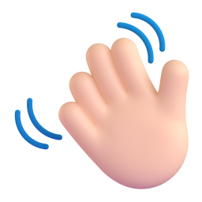
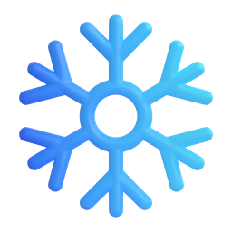

GR-004
A1
to be: positive
To be үйл үг: эерэг хэлбэр
By the end, you can introduce yourself and describe anyone.
Энэ хичээлийн төгсгөлд өөрийгөө танилцуулж, бусдыг дүрсэлж чадна.
A self-introduction
Өөрийгөө танилцуулах

Anu
I
am
Anu.
Би Ану.
I
am
14.
Би 14 настай.
I
am
from Erdenet.
Би Эрдэнэтээс ирсэн.
My brother
is
10.
Дүү маань 10 настай.
My parents
are
teachers.
Аав ээж маань багш нар.
am, is, are: three forms of one verb.
am, is, are: нэг үйл үгийн гурван хэлбэр.
Examples
Жишээ
I
am
a student.
Би сурагч.
She
is
my teacher.
Тэр миний багш.
They
are
from Ulaanbaatar.
Тэд Улаанбаатараас ирсэн.
It
is
cold today.
Өнөөдөр хүйтэн байна.

Which words go with is?
Аль үгс is-тэй хамт ордог вэ?
am, is, are
Be үйл үгийн гурван хэлбэр
I
am
he / she / it
is
you / we / they
are
One verb, three forms. The subject decides.
Нэг үйл үг, гурван хэлбэр. Өгүүлэгдэхүүн шийднэ.
Names and nouns
Хүний нэр ба нэр үг
is
one person or thing
нэг хүн эсвэл юм
Bat
is
my father
is
the book
is
Ulaanbaatar
is
Bat = he
is
are
more than one
нэгээс олон
Bat and Saraa
are
my parents
are
the books
are
the students
are
my parents = they
are
Swap it for a pronoun in your head, then choose.
Толгойдоо төлөөний үгээр орлуулж бодоод, дараа нь сонго.
What be is used for
Be юунд хэрэглэгддэг вэ?
Who or what someone is
Хэн, юу болох
She
is
a doctor.
Тэр эмч.
What someone is like
Ямар байх
He
is
tall.
Тэр өндөр.
Where someone is from
Хаанаас ирсэн
We
are
from Mongolia.
Бид Монголоос ирсэн.
Age
Нас
I
am
14.
Би 14 настай.
Short forms
Товчилсон хэлбэр
Full
Бүтэн
Short
Товч
I am
I'm
you are
you're
he is
he's
she is
she's
Full
Бүтэн
Short
Товч
it is
it's
we are
we're
they are
they're
The apostrophe ( ' ) shows a missing letter.
Апостроф ( ' ) хасагдсан үсгийг заана.
Short forms for speaking, full forms for formal writing.
Ярихдаа товч хэлбэр, албан бичигт бүтэн хэлбэр.
Watch out!
Анхаар!
Mongolian needs no verb here. English always does.
Монголоор: Би сурагч. Англиар: I am a student.
Буруу
She
very happy.
Зөв
She
is
very happy.
Тэр их баяртай байна.
Буруу
My brother
12 years old.
Зөв
My brother
is
12 years old.
Дүү маань 12 настай.
Буруу
My parents
is
teachers.
Зөв
My parents
are
teachers.
Аав ээж маань багш нар.
Model text: about me
Загвар эх: миний тухай
Hi!
I'm
Temuulen.
Сайн уу! Би Тэмүүлэн.
I'm
15, and
I'm
from Darkhan.
Би 15 настай, Дарханаас ирсэн.
My father
is
an engineer, and my mother
is
a nurse.
Аав маань инженер, ээж маань сувилагч.
My brothers
are
8 and 11.
Дүү нар маань 8, 11 настай.
Our flat
is
small, but
it's
warm.
Манай байр жижиг ч дулаахан.
I'm
happy here.
Би энд аз жаргалтай байна.
Remember
Санаж ав
1
I
am
· he / she / it
is
· you / we / they
are
am, is, are: өгүүлэгдэхүүнээс хамаарна.
2
One thing
is
· more than one
are
Нэг зүйл
is · олон
are
3
Every English sentence needs a verb.
Англи өгүүлбэрт үйл үг заавал байна.